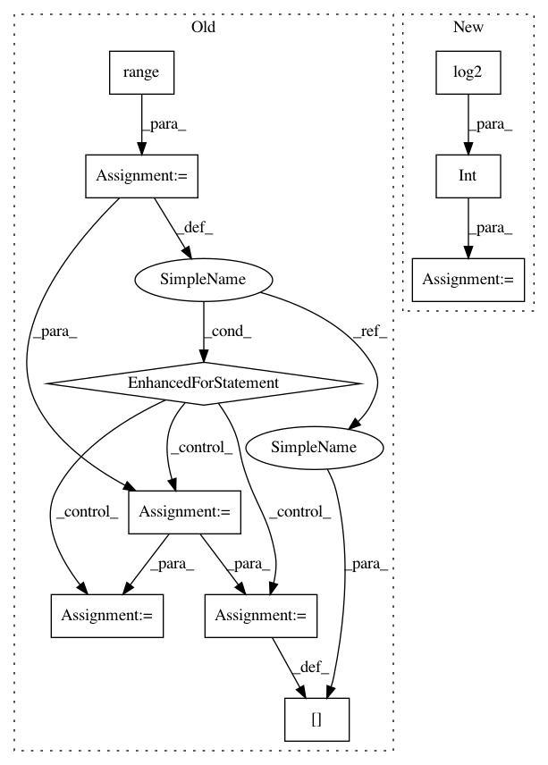

a434c63df31f3b7d25f77da7c64e32f86d5230dd,umap/umap_.py,,fuzzy_simplicial_set,#Any#Any#Any#Any#Any#Any#Any#,574
Before Change
"Results may be less than ideal. Try re-running with"
"different parameters.")
for i in range(knn_indices.shape[0]):
order = np.argsort(knn_dists[i])
knn_dists[i] = knn_dists[i][order]
knn_indices[i] = knn_indices[i][order]
sigmas, rhos = smooth_knn_dist(knn_dists, n_neighbors)
for i in range(knn_indices.shape[0]):
for j in range(n_neighbors):
After Change
tuple(metric_kwds.values()))
// TODO: Hacked values for now
n_trees = 5 + int(round((X.shape[0]) ** 0.5 / 20.0))
n_iters = max(5, int(round(np.log2(X.shape[0]))))
leaf_array = rptree_leaf_array(X, n_neighbors,
rng_state, n_trees=n_trees,
angular=angular)
In pattern: SUPERPATTERN
Frequency: 3
Non-data size: 10
Instances
Project Name: lmcinnes/umap
Commit Name: a434c63df31f3b7d25f77da7c64e32f86d5230dd
Time: 2017-12-08
Author: leland.mcinnes@gmail.com
File Name: umap/umap_.py
Class Name:
Method Name: fuzzy_simplicial_set
Project Name: Qiskit/qiskit-aqua
Commit Name: a194557ba754f9b14d473ff9e39a2bc2449e58c1
Time: 2018-07-06
Author: chenrich@us.ibm.com
File Name: qiskit_acqua/ising/maxcut.py
Class Name:
Method Name: sample_most_likely
Project Name: Qiskit/qiskit-aqua
Commit Name: d892fb853c4c296539034d2dbaf304c0d06a357d
Time: 2018-07-06
Author: 34400304+liupibm@users.noreply.github.com
File Name: qiskit_acqua/ising/graphpartition.py
Class Name:
Method Name: sample_most_likely
Project Name: lmcinnes/umap
Commit Name: a434c63df31f3b7d25f77da7c64e32f86d5230dd
Time: 2017-12-08
Author: leland.mcinnes@gmail.com
File Name: umap/umap_.py
Class Name:
Method Name: fuzzy_simplicial_set